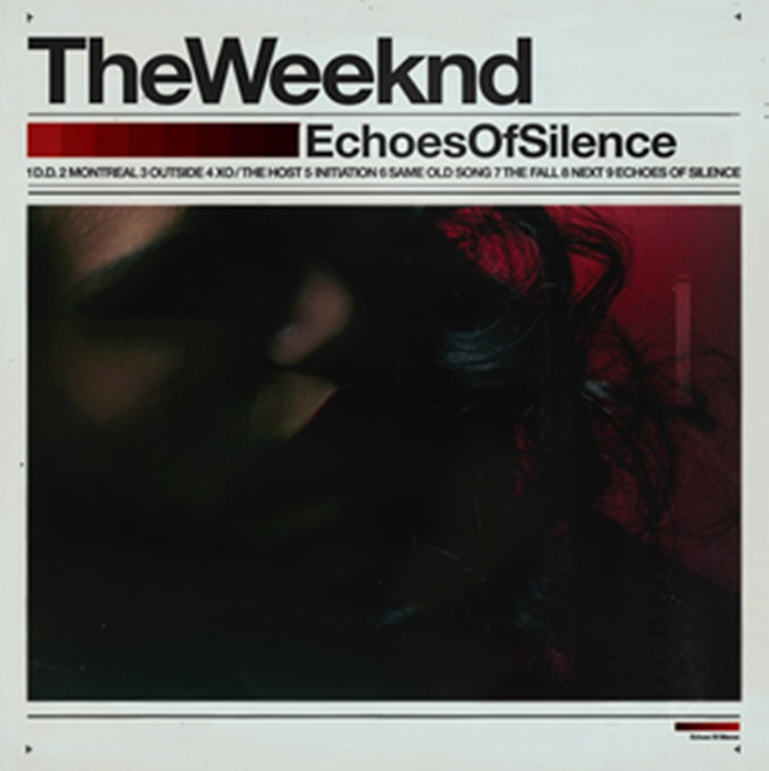

The Weeknd: Impacto Musical
Abel Makkonen Tesfaye, nasceu a 16 de fevereiro de 1990, no Canadá. É cantor, compositor e produtor musical, conhecido pela sua voz distinta e pelo seu estilo musical inovador que combina R&B, pop e elementos de música eletrónica. The Weeknd surgiu no mundo da música em 2011, com três mixtapes que não aparentavam grande sucesso. Contudo, em pouco tempo, tornou-se num "inventor" de várias sensações pop a nível gobal. Vencedor de três GRAMMY Awards e detentor de vários recordes, The Weeknd lançou em 2020 a nostalgica "Blinding Lights", que se tornou num sucesso mundial rapidamente. Esta música é atualmente a mais ouvida em todo o mundo no Spotify com 3.969 mil milhões de streams. Para além disso, tem consolidada a sua posição no Top Songs Global há mais de 1490 dias consecutivos.
Discografia

House Of Balloons (2011)

Echoes Of Silence (2011)

Trilogy (2012)

Kiss Land (2013)
Beauty Behind The Madness (2015)
My Dear Melancholy (2018)

After Hours (2020)
Ao longo da sua carreira de 10 anos, The Weeknd lançou vários albúns que o tornaram numa figura influente na música contemporânea. Em 2010, lançava uma série de mixtapes independentes, "House of Balloons", "Thursday" e "Echoes of Silence". Quando finalmente assinou um contrato com uma gravadora (Republic Records), relançou as mixtapes num só album, "Trilogy", iniciando assim o seu percurso musical. Com várias produções que se tornaram num fenómeno, destaca-se "After Hours" que é o álbum de R&B mais ouvido de todos os tempos, seguindo em segundo lugar "Starboy".
Globalmente os seus álbuns revelam-se bastante populares, destacando-se mais uma vez "After Hours" e "Starboy". Foi apurado que "Thursday" apresenta-se como o álbum menos popular, com apenas 63% de popularidade. Em comparação com os 92% dos dois álbuns mais populares, demonstra uma descrepância.
Valência: É uma medida realizada pelo Spotify que vai de 0.0 a 1.0 e descreve a positividade musical transmitida por uma música. Faixas com alta valência soam mais positivas (por exemplo: alegres, animadas, eufóricas), enquanto faixas com baixa valência soam mais negativas (por exemplo: tristes, deprimidas, irritadas).
Para cada álbum foi explorado o seu nível de energia e valência, ao qual se chegou às seguintes conclusões: "Thursday" apresenta-se como o albúm menos energético, enquanto "House Of Balloons" possui um nível bastante baixo de valência, o que indica músicas mais tristes e deprimentes. "After Hours" que é o álbum com mais energia, também é caracterizado com músicas mais tristes ou até irritadas. Isto demonstra que a energia transmitida pelas músicas não é significado de músicas mais alegres. Os sentimentos mais profundos que podemos sentir, como por exemplo, a raiva, podem conter um alto nível de energia. Como nenhum albúm ultrapassa os 50% de valência, não são considerados alegres ou eufóricos.
Com este gráfico é possivel interpretar que no inicio da sua carreira, The Weeknd produzia músicas mais tristes e melancólicas. Porém ao longo da sua carreira, tem atingido picos mais altos em que produz músicas mais animadas. A partir de 2018, depois de uma queda, a positivade das suas músicas tem aumentado. Será que a tendência para produções futuras é esta? Ora é uma questão que só os próximos albúns (que são muito esperados) podem responder!
Podemos dançar ao som de The Weeknd?
As suas músicas são descritas como um género melancólico, tóxico e emocional. Usadas para expressar os sentimentos mais intensos e negros do coração. Por isso, será que são as mais indicadas para praticar alguns passinhos de dança?
Segundo a pesquisa realizada, existem alguns álbuns mais indicados para essa ação. No topo temos: "Trilogy", (devemos recordar que este álbum é o aglomerado das três mixtapes, mencionadas anteriormente) e Starboy. Em último lugar encontra-se o "My Dear Melancholy", que como o nome indica é um albúm mais melancólico e triste. Concluindo, é possivel dançar ao som de The Weeknd, pode não ser o artista mais indicado para tal, mas todas as músicas servem para abanar o "capacete".
PS: Para dançar à séria recomenda-se Quim Barreiros! 😁
Top 10: Portugal vs Global
A semelhança evidente nos valores da popularidade do Top 10 de músicas em Portugal e em escala global, destaca o apelo universal das músicas. A consistência nos gostos musicais evidencia a habilidade do artista em criar um som que transcende fronteiras culturais e geográficas. Essa uniformidade sugere uma conexão emocional e artística que ultrapassa diferenças regionais, reforçando The Weeknd como uma figura verdadeiramente global na música contemporânea. Os valores apresentados demonstram, não só o poder das produções, mas também a capacidade do artista em unir audiências diversas através das suas músicas cativantes e envolventes.
"Starboy" e "One Of The Girls" destacam-se com uma percentagem de 93% de popularidade, em Portugal e global.
The Weeknd é de momento o artista #1 com mais de 111 milhões de ouvintes por mês*. Ocupou este lugar durante longos meses, até que em novembro Taylor Swift ultrapassou o cantor. Porém, no último dia do ano voltou a subir ao primeiro lugar, finalizando 2023 em grande. The Weeknd foi o primeiro artista a alcançar 100 milhões de ouvintes na plataforma, confirmando o seu crescente sucesso.
* estes dados foram retirados no dia 2 de janeiro de 2024
"If it ain't XO then it gotta go!"
Duas letras são usadas para retratar os fãs deste artista, XO. Uma palavra que é usada algumas vezes pelo cantor ao longo das suas músicas para demonstrar o apreço pelos seus fãs.
Alguns afirmam que XO apenas significa beijos e abraços, enquanto outros dizem que as letras representam as drogas ecstasy e oxycontin. No entanto, XO faz parte do slogan "XO 'til we overdose" (XO até morrermos de overdose). Este tipo de linguagem e conteúdo está presente em algumas músicas, principalmente as mais antigas, que foram lançadas numa altura em que o cantor consumia substâncias ilícitas. Retrata uma fase díficl da vida dele, o mesmo chega a afirmar: “When I had nothing to do but make music, it was very heavy. Drugs were a crutch for me.” (Quando eu não tinha nada para fazer além de fazer música, era muito difícil. As drogas eram um apoio para mim.)
“There were songs on my first record that were seven minutes long, rambling—whatever thoughts I was having when I was under the influence at the time. I can’t see myself doing that now.”
Este gráfico representa o número de vezes que The Weeknd menciona a expressão XO por música.
O sucesso do The Weeknd é o resultado da fusão única da sua voz envolvente, produções inovadoras e letras cativantes. Ao desafiar as música convenvional e explorar diversas influências, ele conquistou um lugar destacado nesta indústria. É uma estrela em ascensão notável e a sua evolução artística constante, promete um futuro ainda mais brilhante.
Metodologias
Para a realização deste trabalho, foram utilizados dados retirados do Spotify API através da linguagem de programação, Python, e foi realizado um web scraper para recolher as músicas e as respetivas letras. A construção total dos gráficos foi feita através do Flourish. Por último, as informações referentes ao artista foram retiradas do Spotify e do site de informação All Music.